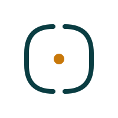
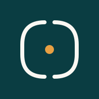
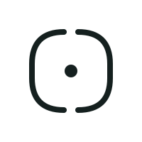
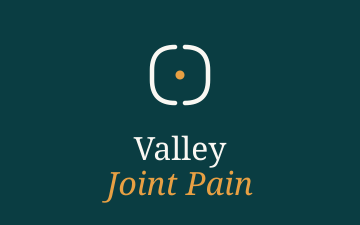
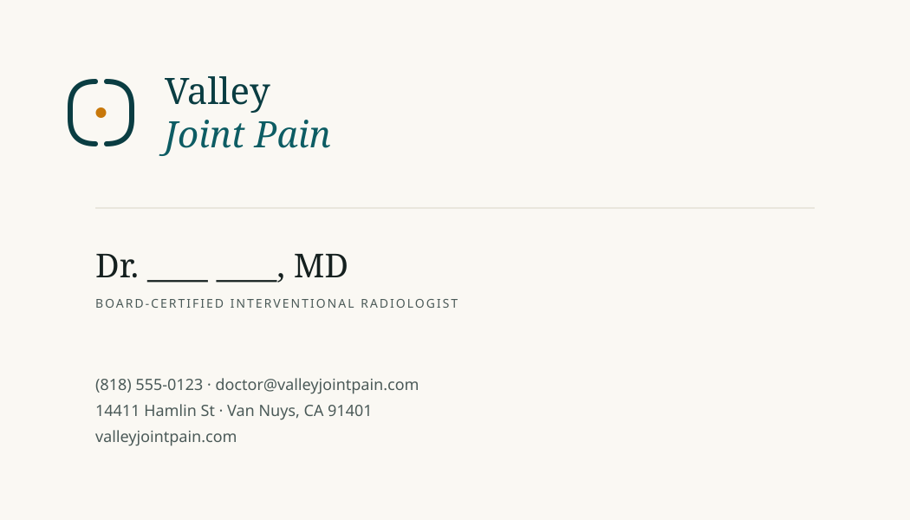
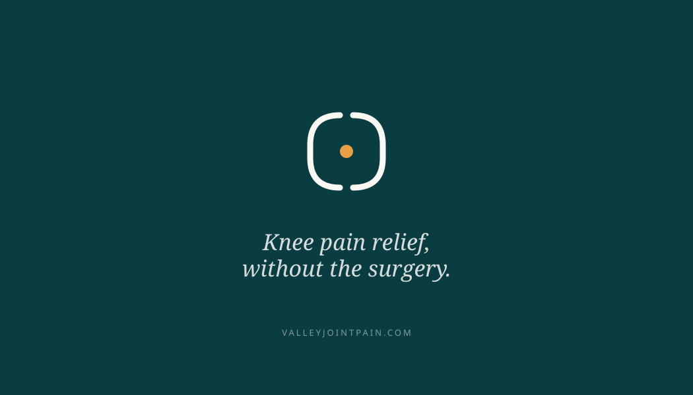
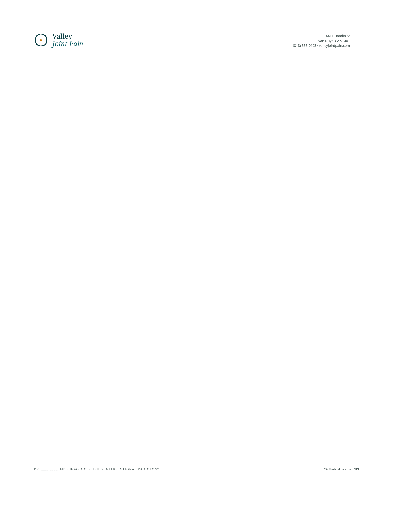
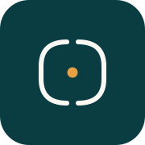
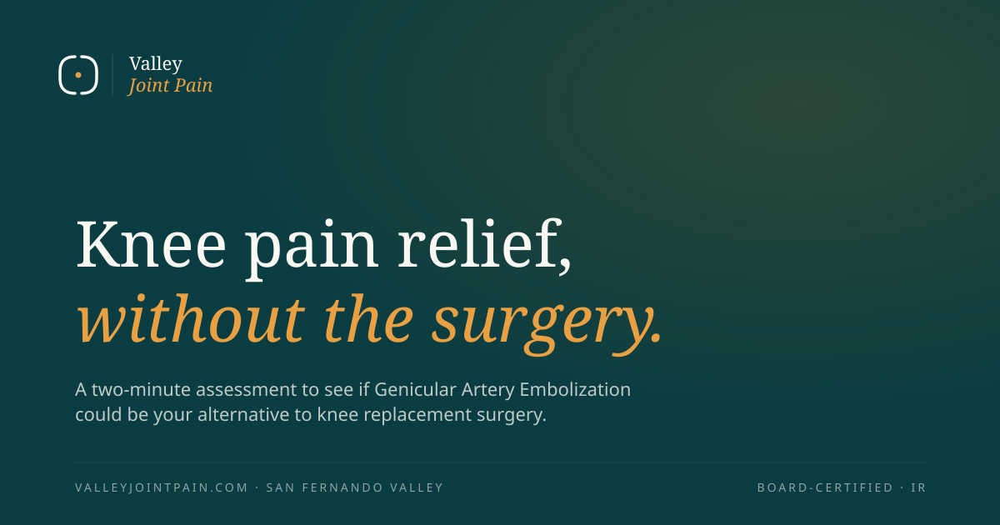

The brand package
Every asset, every file, in one place. Click any item to open the source SVG. Read docs/brand-guidelines.md for the full system.
Every asset, every file, in one place. Click any item to open the source SVG. Read docs/brand-guidelines.md for the full system.
Nine approved configurations covering every context — light surfaces, dark surfaces, square spaces, single-color reproduction, and compact single-line headers.






A restrained palette. Two anchors, three supports. Amber appears only on calls-to-action and accent moments — its scarcity is what makes it earn attention.
A serif-and-sans pairing already proven in editorial medical contexts. Both Google Fonts. Both free. Both load fast.
Print-ready templates at standard sizes. Send these directly to your printer or convert to PDF for sharing.



Favicon for the browser tab, app icon for iOS home screen, and the Open Graph card that displays when valleyjointpain.com is shared on social or in messaging.

